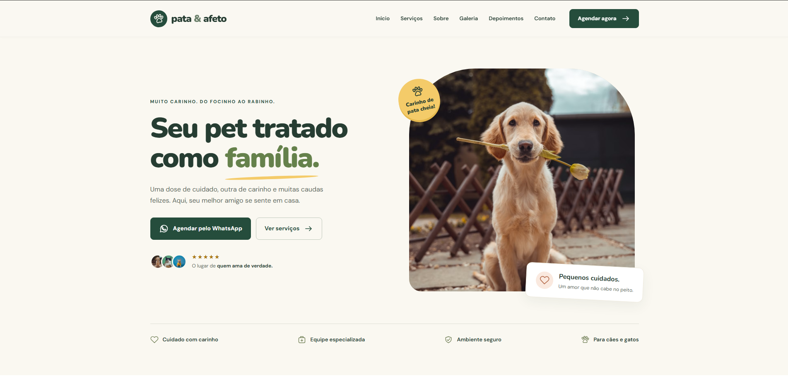
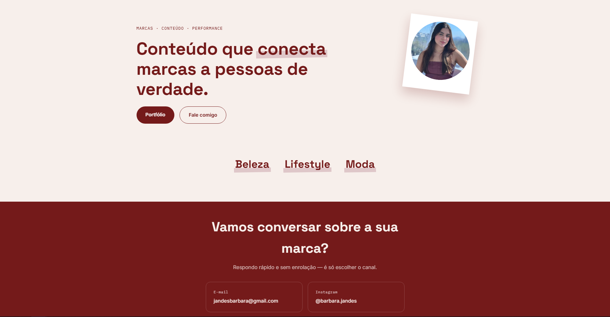
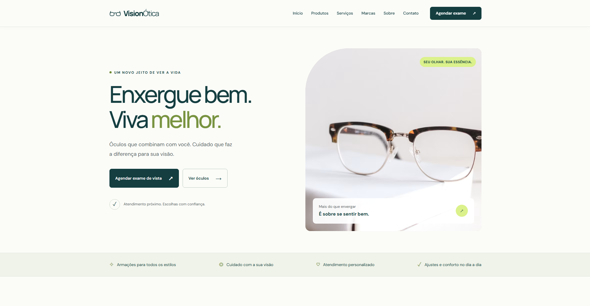

Pata & Afeto
Uma apresentação acolhedora dos serviços, com galeria, depoimentos e um caminho direto para agendar pelo WhatsApp.
Serviços · AgendamentoVisitar projeto
Desenvolvedor web
Guarapari, ES
Desenvolvo sites que dão forma à identidade de pessoas e negócios.
Conheça meu trabalho
Projetos selecionados
Pet shop, criação de conteúdo e ótica. Diferentes negócios, traduzidos em experiências na web.
Uma apresentação acolhedora dos serviços, com galeria, depoimentos e um caminho direto para agendar pelo WhatsApp.

Visitar siteUm espaço para apresentar a criadora, seus temas de conteúdo e os canais de contato para conversar com marcas.

Visitar siteUma apresentação de produtos, marcas e serviços da ótica, com destaque para os óculos e o agendamento de exame de vista.
Quem está por trás
Sou desenvolvedor web e estudante de Ciência da Computação na Anhanguera de Guarapari.
Estou no 6º período e levo o que aprendo para projetos de sites e landing pages. Gosto de transformar informações em páginas fáceis de navegar, com espaço para a personalidade de cada negócio.
Meu foco está no desenvolvimento web: da estrutura em HTML aos detalhes de CSS e às interações com JavaScript.
Ferramentas & conhecimentos
Minha base para construir na web.
Como posso ajudar
Uma página para divulgar um serviço ou um site para apresentar seu trabalho. O formato começa pelo que você precisa comunicar.
Conversar sobre um projetoUma página dedicada ao seu produto, serviço ou campanha, com as informações que ajudam o visitante a dar o próximo passo.
Apresentação · Chamadas para açãoUm endereço para contar a história do negócio, organizar seus serviços e facilitar o contato com clientes.
Empresas · Profissionais autônomosSeu trabalho em primeiro plano. Projetos, apresentação e contatos em uma experiência que combina com sua área.
Criadores · ProfissionaisDesenvolvimento e manutenção de bancos de dados, com organização das informações e consultas em SQL.
Estrutura · Consultas · ManutençãoAprendizado contínuo
Conceitos fundamentais de segurança digital
2 horas · Concluído em 21/08/2026
7 horas · Concluído em 23/08/2026
Vamos conversar
Me conte o que você quer colocar no ar. Podemos conversar sobre o formato, o conteúdo e o que faz sentido para o seu negócio.
Tem um projeto em mente? Me conte o que você precisa e vamos conversar.